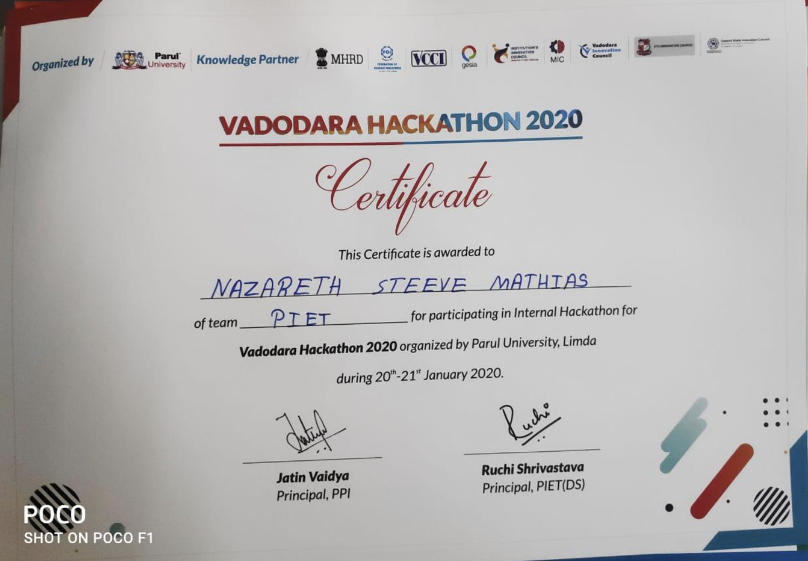

Extra Courses and Extra Curricular Activities




Transitioning from high school to university was an exciting phase of my life, marked by profound learning and invaluable experiences. During this pivotal period, I delved into a diverse array of subjects that expanded my horizons. I immersed myself in coursework encompassing Data Structures, Advanced Data Algorithms, Artificial Intelligence, Python, Object-Oriented Programming, Object-Oriented Designs, and Web Development. These subjects not only deepened my knowledge but also ignited my passion for technology and problem-solving. My academic pursuits were not limited to the classroom. I actively participated in various extracurricular activities, with a particular penchant for hackathons. These competitive events became a testing ground for my skills and innovative thinking, and they played a significant role in honing my abilities as a developer and a team player. A crowning achievement during my undergraduate years was the publication of a research paper at an international IEEE conference. This experience further reinforced my dedication to technology and research, setting a precedent for my future endeavors. As I look back on my bachelor's degree journey, I see it as a period of growth, exploration, and the foundation for my subsequent academic and professional achievements. Each subject, project, and experience paved the way for my continued pursuit of excellence in the world of software development and technology.
CYFO ANTI-HACK APP
View Code